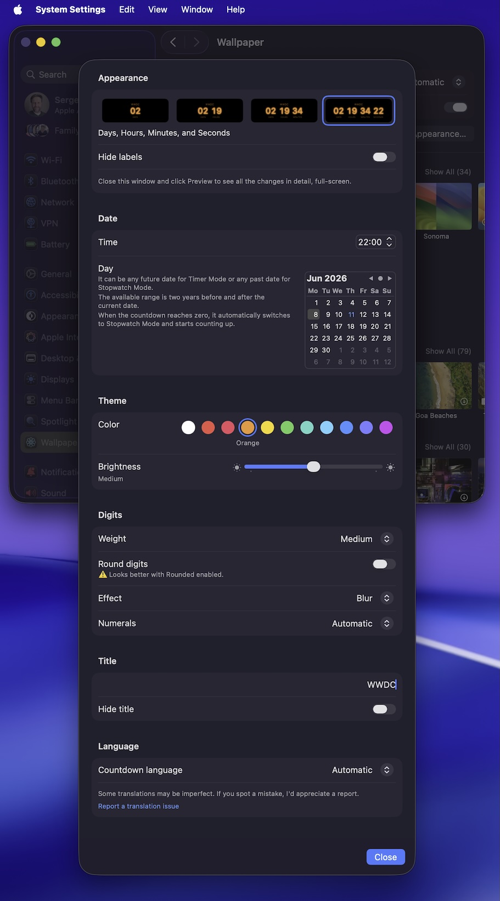

Screen saver for macOS
Counts down quietly while your Mac rests.
Minimal Countdown counts down to — or up from — a date you choose, in big, calm digits.
Features
Simple to set, nice to watch.
Counts down — or up
Set a date and time up to 999 days away. Past dates count up in Stopwatch mode, and the timer switches to it by itself at zero.
Title and units
Add a short title above the timer. Show days, hours, minutes and seconds — any of them — and hide the labels if you like.
Color and brightness
11 accent colors and three brightness levels to dim the digits to taste.
Digit effects
Blur, inner glow, backlight or glow, with a custom effect color — or none, for the classic look.
Digits your way
Adjust the font weight, switch to rounded digits, and choose a numeral system: Western, Eastern Arabic and more.
10 languages
English, Spanish, German, French, Russian, Hebrew, Arabic, Persian, Hindi and Sanskrit — with right-to-left support in Settings.

Settings
All in one window.
Open System Settings → Wallpaper → Screen Saver…, select Minimal Countdown and choose Options… to set everything up.
Settings live in their own file, so you can copy them to your other Macs.
Install
Unzip, double-click, done.
- Download the latest release and unzip it.
- Double-click
MinimalCountdown.saverand choose whether to install it only for you or for all users. - Customize the settings to fit your imagination — and enjoy it.
Reinstalling an update
- Open System Settings → Wallpaper → Screen Saver… (macOS Tahoe), or System Settings → Screen Saver (macOS Sonoma–Sequoia).
- Control-click Minimal Countdown, choose Delete "Minimal Countdown", then Move to Trash.
- Close System Settings, then run
killall WallpaperAgentin Terminal — or just restart your Mac. - Install the new version of
MinimalCountdown.saver.